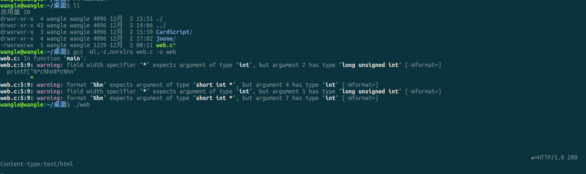
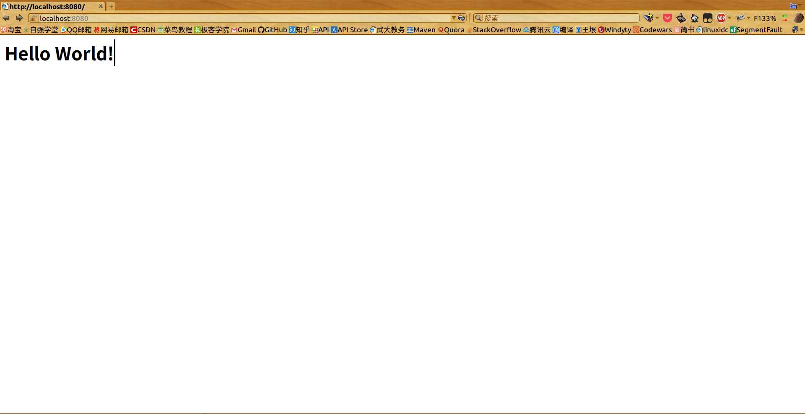

用一个printf()语句实现一个web服务器
![]()
有这么一个笑话：Jeff Dean有一次用一句printf实现了一个web服务器。其他工程师添加了数千行注释但依然无法完全解释清楚其工作原理。而这个程序就是今天Google首页的前端。
而理论上，这个其实是可行的。
翻译原文：Implementing a web server in a single printf() call
正文
有人刚才给我转发了一个关于Jeff Dean的笑话——所谓的“关于Jeff Dean的事实”（链接：知乎，quora），每次我看这个时，下面这条总是很突出：
Jeff Dean有一次用一句printf实现了一个web服务器。其他工程师添加了数千行注释但依然无法完全解释清楚其工作原理。而这个程序就是今天Google首页的前端。
事实上，确实可以通过一句printf语句来实现一个web服务器，但我发现没有人做过这个。所以这次，我决定自己实现一下。下面就是实现的代码，只有单独的一句printf调用，没有额外的变量或者宏定义（别担心，我会解释它是怎么工作的）：
web1.c
#include <stdio.h>
int main(int argc, char *argv[]){
printf("%*c%hn%*c%hn"
"\xeb\x3d\x48\x54\x54\x50\x2f\x31\x2e\x30\x20\x32"
"\x30\x30\x0d\x0a\x43\x6f\x6e\x74\x65\x6e\x74\x2d"
"\x74\x79\x70\x65\x3a\x74\x65\x78\x74\x2f\x68\x74"
"\x6d\x6c\x0d\x0a\x0d\x0a\x3c\x68\x31\x3e\x48\x65"
"\x6c\x6c\x6f\x20\x57\x6f\x72\x6c\x64\x21\x3c\x2f"
"\x68\x31\x3e\x4c\x8d\x2d\xbc\xff\xff\xff\x48\x89"
"\xe3\x48\x83\xeb\x10\x48\x31\xc0\x50\x66\xb8\x1f"
"\x90\xc1\xe0\x10\xb0\x02\x50\x31\xd2\x31\xf6\xff"
"\xc6\x89\xf7\xff\xc7\x31\xc0\xb0\x29\x0f\x05\x49"
"\x89\xc2\x31\xd2\xb2\x10\x48\x89\xde\x89\xc7\x31"
"\xc0\xb0\x31\x0f\x05\x31\xc0\xb0\x05\x89\xc6\x4c"
"\x89\xd0\x89\xc7\x31\xc0\xb0\x32\x0f\x05\x31\xd2"
"\x31\xf6\x4c\x89\xd0\x89\xc7\x31\xc0\xb0\x2b\x0f"
"\x05\x49\x89\xc4\x48\x31\xd2\xb2\x3d\x4c\x89\xee"
"\x4c\x89\xe7\x31\xc0\xff\xc0\x0f\x05\x31\xf6\xff"
"\xc6\xff\xc6\x4c\x89\xe7\x31\xc0\xb0\x30\x0f\x05"
"\x4c\x89\xe7\x31\xc0\xb0\x03\x0f\x05\xeb\xc3",
((((unsigned long int)0x4005c8+12)>>16)&0xffff),
0,0x00000000006007D8+2,
(((unsigned long int)0x4005c8+12)&0xffff)-((((unsigned long int)0x4005c8+12)>>16)&0xffff),
0, 0x00000000006007D8 );
}
这段代码只能在64位的linux系统上运行（可能还和gcc的版本有关）。下面编译它：
gcc -g web1.c -o webserver
你们可能已经猜到了，我使用了一段特殊的格式化字符串欺骗了你们。这段代码可能并不能在你的机器上运行，因为我硬编码了两个内存地址。
下面这个版本可能更明了一些（也容易修改一些），但是你依然需要改变两个值（后面我会解释）：FUNCTION_ADDR和DESTADDR。
#include<stdio.h>
#include<stdlib.h>
#include<stdint.h>
#define FUNCTION_ADDR ((uint64_t)0x4005c8 + 12)
#define DESTADDR 0x00000000006007D8
#define a (FUNCTION_ADDR & 0xffff)
#define b ((FUNCTION_ADDR >> 16) & 0xffff)
int main(int argc, char *argv[]){
printf("%*c%hn%*c%hn"
"\xeb\x3d\x48\x54\x54\x50\x2f\x31\x2e\x30\x20\x32"
"\x30\x30\x0d\x0a\x43\x6f\x6e\x74\x65\x6e\x74\x2d"
"\x74\x79\x70\x65\x3a\x74\x65\x78\x74\x2f\x68\x74"
"\x6d\x6c\x0d\x0a\x0d\x0a\x3c\x68\x31\x3e\x48\x65"
"\x6c\x6c\x6f\x20\x57\x6f\x72\x6c\x64\x21\x3c\x2f"
"\x68\x31\x3e\x4c\x8d\x2d\xbc\xff\xff\xff\x48\x89"
"\xe3\x48\x83\xeb\x10\x48\x31\xc0\x50\x66\xb8\x1f"
"\x90\xc1\xe0\x10\xb0\x02\x50\x31\xd2\x31\xf6\xff"
"\xc6\x89\xf7\xff\xc7\x31\xc0\xb0\x29\x0f\x05\x49"
"\x89\xc2\x31\xd2\xb2\x10\x48\x89\xde\x89\xc7\x31"
"\xc0\xb0\x31\x0f\x05\x31\xc0\xb0\x05\x89\xc6\x4c"
"\x89\xd0\x89\xc7\x31\xc0\xb0\x32\x0f\x05\x31\xd2"
"\x31\xf6\x4c\x89\xd0\x89\xc7\x31\xc0\xb0\x2b\x0f"
"\x05\x49\x89\xc4\x48\x31\xd2\xb2\x3d\x4c\x89\xee"
"\x4c\x89\xe7\x31\xc0\xff\xc0\x0f\x05\x31\xf6\xff"
"\xc6\xff\xc6\x4c\x89\xe7\x31\xc0\xb0\x30\x0f\x05"
"\x4c\x89\xe7\x31\xc0\xb0\x03\x0f\x05\xeb\xc3",
b, 0, DESTADDR + 2, a-b, 0, DESTADDR );
}
我会通过下面这些简短的C代码解释上面的是怎样工作的。
第一个，我们如何不通过显式的函数调用来运行另一段代码？下面是一个例子：
run-finalizer.c
#include<stdlib.h>
#include<stdio.h>
#define ADDR 0x00000000600720
void hello(){
printf("hello world\n");
}
int main(int argc, char *argv[]){
(*((unsigned long int*)ADDR))=(unsigned long int)hello;
}
你可以编译它，但是它可能并不能在你的系统上运行（会出现段错误），你需要按照以下的步骤来：
注：
Ubuntu添加了一个在最终的ELF中提供只读的重定位表的安全机制。为了能够在ubuntu上运行这些例子，在编译时需要添加以下这些参数：
-Wl,-z,norelro
例如：
gcc -Wl,-z,norelro test.c
1、编译这段代码：
gcc run-finalizer.c -o run-finalizer
2、查看.fini_array（译者注：相关资料，链接程序和库指南，初始化和终止节，When will the .fini_array section being used?）的地址：
objdump -h -j .fini_array run-finalizer
然后找到VMA（Virtual Memory Area，虚拟内存空间）的地址：
run-finalizer： 文件格式 elf64-x86-64
节：
Idx Name Size VMA LMA File off Algn
19 .fini_array 00000008 00000000006007d8 00000000006007d8 000007d8 2**3
CONTENTS, ALLOC, LOAD, DATA
你最好使用最新版本的GCC来编译，老版本使用不同的机制来存储终止例程（资料：初始化和终止例程）。
3、将ADDR改为VMA的值；
4、再次编译；
5、运行。
然后你应该可以看到在屏幕上打印出了”hello world”。
那它到底是怎么实现的呢？
根据Chapter 11 of Linux Standard Base Core Specification 3.1：
.fini_array 这个节包含了一个函数指针数组，在含有这个部分的可执行文件或者共享对象中作为一个单独的终止函数数组（termination array）。
This section holds an array of function pointers that contributes to a single termination array for the executable or shared object containing the section.
我们强制覆盖这个数组，这样hello函数就可以被调用了。如果你要编译上面的web服务器的代码，ADDR的值需要用同样方法来修改（使用objdump）。
现在我们知道如何通过覆盖某一个特定的地址来执行一个函数，接下来我们需要知道的是，如何使用printf来覆盖这个地址。你可以找到很多关于格式化字符串攻击的教程，在这里我试着做一个简短的解释。
注：格式化字符串攻击（漏洞），是一种很古老的漏洞。可以查看下面的博客了解一下：
printf函数可以通过%n这个格式化字符来获取我们已经输出了多少个字符，例如：
#include <stdio.h>
int main(){
int count;
printf("AB%n", &count);
printf("\n%d characters printed\n", count);
}
结果为：
AB
2 characters printed
我们可以将任何内存地址放在count上来覆盖该地址的值。但是如果需要覆盖一个很大的地址值的话，我们需要打印大量的字符，这个是很傻的。幸运的是，另外一个格式化字符%hn作用于short而不是int，我们可以一次覆盖2个字节，从而组成一个我们想要的4字节的值。
接下来让我们试一下，使用两次printf调用，用我们想要的值（这里是函数hello的指针值）来覆盖.fini_array：
#include <stdio.h>
#include <stdlib.h>
#include <stdint.h>
#define FUNCTION_ADDR ((uint64_t)hello)
#define DESTADDR 0x0000000000600948
void hello(){
printf("\n\n\n\nhello world\n\n");
}
int main(int argc, char *argv[]){
short a= FUNCTION_ADDR & 0xffff;
short b = (FUNCTION_ADDR >> 16) & 0xffff;
printf("a = %04x b = %04x\n", a, b);fflush(stdout);
uint64_t *p = (uint64_t*)DESTADDR;
printf("before: %08lx\n", *p); fflush(stdout);
printf("%*c%hn", b, 0, DESTADDR + 2 );fflush(stdout);
printf("after1: %08lx\n", *p); fflush(stdout);
printf("%*c%hn", a, 0, DESTADDR);fflush(stdout);
printf("after2: %08lx\n", *p); fflush(stdout);
return 0;
}
其中关键的部分是：
short a= FUNCTION_ADDR & 0xffff;
short b = (FUNCTION_ADDR >> 16) & 0xffff;
printf("%*c%hn", b, 0, DESTADDR + 2 );
printf("%*c%hn", a, 0, DESTADDR);
a和b其实就是函数地址值的一半（译者注：指针占4个字节，a、b是前后的两个字节），我们可以构建一个长度为a和b的字符串给printf函数输出，但这样就太繁琐了，所以我选择使用%*这个格式化字符，它可以通过参数来控制输出的长度。
例如，下面的代码：
printf("%*c", 10, 'A');
它将会打印9个空格，紧随着输出字符A。所以，总共输出10个字符。
如果我们想只用一次printf，我们就需要记得，已经打印了b个字节，所以我们还需要打印另外的b-a（可能为负）个字节（输出的计数器是累加的）。
printf("%*c%hn%*c%hn", b, 0, DESTADDR + 2, b-a, 0, DESTADDR );
例子中我们使用的是hello函数，但是实际上我们可以调用任何函数（或者说，任何地址）。我已经编写了一个只输出Hello world的web服务器的shellcode，如下：
unsigned char hello[] =
"\xeb\x3d\x48\x54\x54\x50\x2f\x31\x2e\x30\x20\x32"
"\x30\x30\x0d\x0a\x43\x6f\x6e\x74\x65\x6e\x74\x2d"
"\x74\x79\x70\x65\x3a\x74\x65\x78\x74\x2f\x68\x74"
"\x6d\x6c\x0d\x0a\x0d\x0a\x3c\x68\x31\x3e\x48\x65"
"\x6c\x6c\x6f\x20\x57\x6f\x72\x6c\x64\x21\x3c\x2f"
"\x68\x31\x3e\x4c\x8d\x2d\xbc\xff\xff\xff\x48\x89"
"\xe3\x48\x83\xeb\x10\x48\x31\xc0\x50\x66\xb8\x1f"
"\x90\xc1\xe0\x10\xb0\x02\x50\x31\xd2\x31\xf6\xff"
"\xc6\x89\xf7\xff\xc7\x31\xc0\xb0\x29\x0f\x05\x49"
"\x89\xc2\x31\xd2\xb2\x10\x48\x89\xde\x89\xc7\x31"
"\xc0\xb0\x31\x0f\x05\x31\xc0\xb0\x05\x89\xc6\x4c"
"\x89\xd0\x89\xc7\x31\xc0\xb0\x32\x0f\x05\x31\xd2"
"\x31\xf6\x4c\x89\xd0\x89\xc7\x31\xc0\xb0\x2b\x0f"
"\x05\x49\x89\xc4\x48\x31\xd2\xb2\x3d\x4c\x89\xee"
"\x4c\x89\xe7\x31\xc0\xff\xc0\x0f\x05\x31\xf6\xff"
"\xc6\xff\xc6\x4c\x89\xe7\x31\xc0\xb0\x30\x0f\x05"
"\x4c\x89\xe7\x31\xc0\xb0\x03\x0f\x05\xeb\xc3";
注：shellcode是一种利用溢出漏洞来执行的特定代码。相关资料如下：
如果我们将hello函数移除，插入上面的shellcode的话，这段shellcode就会被执行。
这个shellcode其实就是一个字符串（或者说，可以看做），所以我们可以将它插入到%*c%hn%*c%hn的后面。这个字符串是未命名的，所以我们需要在编译后找到它的地址。为了获取这个地址，我们需要编译这个代码，然后反编译为汇编：
objdump -d webserver
......
......
00000000004004e6 <main>:
4004e6: 55 push %rbp
4004e7: 48 89 e5 mov %rsp,%rbp
4004ea: 48 83 ec 10 sub $0x10,%rsp
4004ee: 89 7d fc mov %edi,-0x4(%rbp)
4004f1: 48 89 75 f0 mov %rsi,-0x10(%rbp)
4004f5: 48 83 ec 08 sub $0x8,%rsp
4004f9: 68 d8 07 60 00 pushq $0x6007d8
4004fe: 41 b9 00 00 00 00 mov $0x0,%r9d
400504: 41 b8 94 05 00 00 mov $0x594,%r8d
40050a: b9 da 07 60 00 mov $0x6007da,%ecx
40050f: ba 00 00 00 00 mov $0x0,%edx
400514: be 40 00 00 00 mov $0x40,%esi
400519: bf c8 05 40 00 mov $0x4005c8,%edi
40051e: b8 00 00 00 00 mov $0x0,%eax
400523: e8 98 fe ff ff callq 4003c0 <printf@plt>
400528: 48 83 c4 10 add $0x10,%rsp
40052c: b8 00 00 00 00 mov $0x0,%eax
400531: c9 leaveq
400532: c3 retq
400533: 66 2e 0f 1f 84 00 00 nopw %cs:0x0(%rax,%rax,1)
40053a: 00 00 00
40053d: 0f 1f 00 nopl (%rax)
......
......
我们需要关心的是这一行：
mov $0x4005c8,%edi
这个0x4005c8就是我们在这里需要的地址：
#define FUNCTION_ADDR ((uint64_t)0x4005c8 + 12)
这里的+12是必需的，因为我们的shellcode紧跟在字符串%*c%hn%*c%hn后，而它的长度是12个字符。
如果你对shellcode的来源感兴趣的话，它其实来自以下的C代码：
#include<stdio.h>
#include<string.h>
#include<stdlib.h>
#include<unistd.h>
#include<sys/types.h>
#include<sys/stat.h>
#include<sys/socket.h>
#include<arpa/inet.h>
#include<netdb.h>
#include<signal.h>
#include<fcntl.h>
int main(int argc, char *argv[]){
int sockfd = socket(AF_INET, SOCK_STREAM, 0);
struct sockaddr_in serv_addr;
bzero((char *)&serv_addr, sizeof(serv_addr));
serv_addr.sin_family = AF_INET;
serv_addr.sin_addr.s_addr = INADDR_ANY;
serv_addr.sin_port = htons(8080);
bind(sockfd, (struct sockaddr *)&serv_addr, sizeof(serv_addr));
listen(sockfd, 5);
while (1) {
int cfd = accept(sockfd, 0, 0);
char *s = "HTTP/1.0 200\r\nContent-type:text/html\r\n\r\n<h1>Hello world!</h1>";
if (fork()==0) {
write(cfd, s, strlen(s));
shutdown(cfd, SHUT_RDWR);
close(cfd);
}
}
return 0;
}
另外，我还做了一些额外的工作，从shellcode中移除了所有的NUL字符（尽管这个并不是必需的）。
Jeff Dean有一次用一句printf实现了一个web服务器。其他工程师添加了数千行注释但依然无法完全解释清楚其工作原理。而这个程序就是今天Google首页的前端。
作为练习，读者可以自己修改一下这个web服务器，让它可以支持Google搜索前端的加载。
这篇博客的代码可以在这里找到：https://github.com/yohanes/printf-webserver
对于那些认为这个毫无用处的人，我只想说：没错！它就是毫无用处！我只是恰好喜欢这个挑战，并且在解决这个问题的过程中，我刷新了对这些知识的认识：shellcode的编写（我已经几年没写过了）、AMD64平台的汇编、系统调用、objdump、.fini_array（上次我检查时，发现gcc还在用.dtors）、printf的格式化字符漏洞、gdb的使用技巧（例如将内存块导出为文件）以及低层次的socket编程（之前我一直使用boost）。
写在后面
最初看到这个笑话时，没有想到真的可以实现，原文作者真的是一个很geek的大神，在翻译的过程中，我学到了很多东西，例如动态链接、内存布局、函数调用栈、格式化字符串攻击等等。翻译的比较随便，很多术语没接触过，也翻译不出来，如果看得不是舒爽，可以直接看原文。
我的运行结果：


补充
很多人说没有看明白，我就根据自己的理解解释一下吧。
首先，这里涉及的技术有动态链接库的加载、初始化、卸载、终止等（上面有相关的资料），格式化字符串攻击，shellcode的原理及编写……
关键的一点是，覆盖.fini_array这个节，这个节的代码将会在动态链接库（或者可执行程序）卸载时被执行。这里再次给出相关的资料链接，初始化和终止节。从中我们也可以知道，为什么是要覆盖终止节而不是初始化节，因为我们需要先使用printf()修改.fini_array节的内容，然后在程序结束时，这个节的内容就会被执行，覆盖初始化节的话，没有什么用，因为程序已经执行过修改前的初始化代码了。这个初始化和终止节，可以理解为C++中的构造函数和析构函数，只不过，涉及的不是类，而是链接库或者可执行程序。
其次，格式化字符串攻击。这个看一下上面的资料就能明白了，主要原理就是通过格式化字符串修改某个内存地址的值。这里就是通过这个来修改.fini_array。
最后，shellcode部分，这个就很geek了，具体原理以及shellcode的编写上面有相关的资料。原文作者已经编写了一个简单的web服务器的shellcode，.fini_array的值被修改为它的地址，所以它会在程序结束时被执行。理论上，只要你的shellcode有这么复杂，你几乎可以使用一句printf实现任何功能。